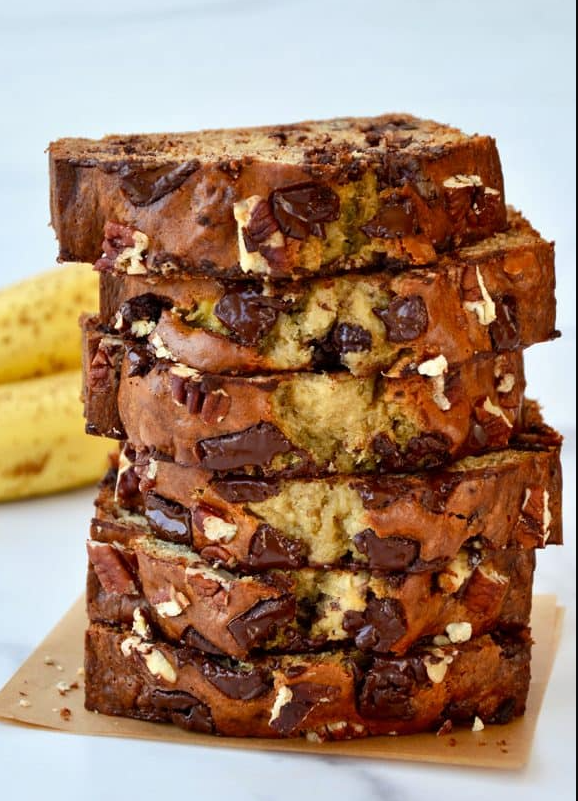

Greek Yogurt Banana Bread

Description
Add a protein punch (plus extra moisture!) to everyone’s favorite quickbread with a top-rated recipe for Greek Yogurt Banana Bread.
- 2 cups all-purpose flour
- 1/2 cup sugar
- 1/4 cup packed light brown sugar
- 1 teaspoon baking soda
- 1/2 teaspoon salt
- 3 very ripe, darkly specked bananas, mashed well (about 1 ½ cups)
- 1/4 cup plain Greek yogurt (nonfat or regular)
- 2 large eggs
- 1/4 cup vegetable oil
- 2 1/2 teaspoons vanilla extract
- 1 cup chopped walnuts, pecans or chocolate chips
Steps
- Preheat the oven to 350°F. Line a 9-inch loaf pan with parchment paper (overhanging on the two long sides) then grease the parchment paper with cooking spray.
- In a large bowl, whisk together the flour, sugar, brown sugar, baking soda and salt.
- In a separate medium bowl, whisk together the mashed bananas, eggs, Greek yogurt, vegetable oil and vanilla extract. Add the wet ingredients to the dry ingredients and stir until combined. Stir in the chopped nuts or chocolate chips then scrape the batter into the prepared loaf pan.
- Bake the bread for 50 to 60 minutes, until a toothpick inserted comes out clean.
- Remove the bread from the oven and allow it to cool completely in the pan before using the parchment paper overhangs to lift the bread out of the pan to slice and serve.
Home